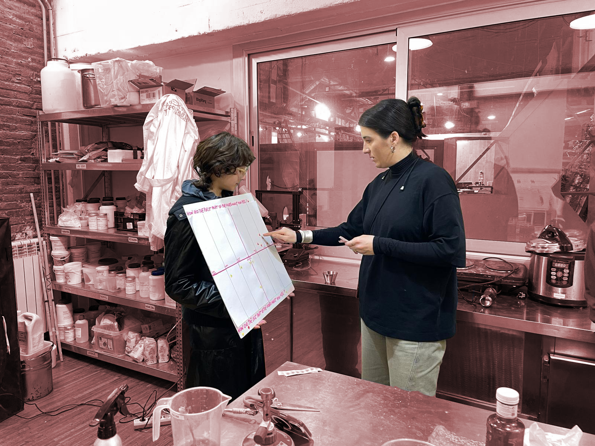
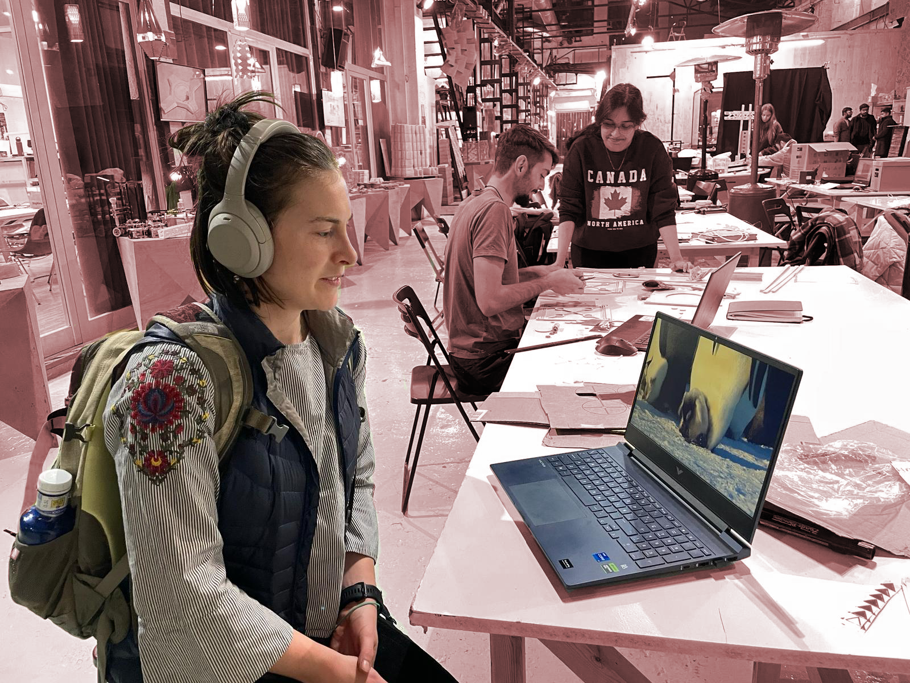
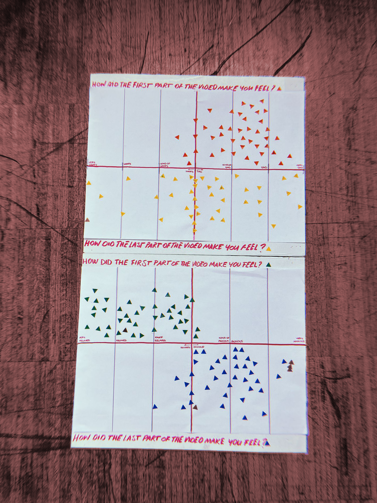

Measuring the world
Collecting data project: Let’s get physical!¶
Carmen Robres, Sophie Maradon, Vania Bisbal, Francisca Herrera, Anna Fedele
We wanted to collect data on emotions and feelings, something connected to our identity and mental health. It was a bit hard to actually come up with a specific “we want” statement because we kept on thinking about what we wanted to measure and experiment with instead of a main objective.
Statements: Can music change your emotions? -> Music can not change your emotions Does music help you connect? -> Music does not help us connect
Project Goals Objective: We want to use music to make people feel better Question: Can music change your emotions?
Null Hypothesis¶
Music can not change your emotions¶
Ideation process¶
The tool we used involves physical interaction. Initially, our intention was to utilize the camera with the Raspberry Pi to connect to an AI capable of recognizing emotions, thereby allowing us to observe changes through facial expressions.

For the physical interaction tool, what we did was edit two videos: one with a sad context and the other with a relaxed context. In both videos, we used different songs. In the sad video, we started with a sad music track and then transitioned to a happy one. In the relaxed video, we began with a relaxed song and then switched to an anxious one.

In order to make it interactive as a physical intervention, we created billboards containing the questions:
“How did you feeling in the first part of the video?” “How did you feel in the second part of the video?”

Each person who responded placed a sticker on the billboard next to their answer. We kept track of each person by assigning numbers to them and their stickers
Conclusion and Results¶
- We successfully altered people’s mood by adjusting the music in a video. While we observed mood variation, we couldn’t control the emotions people felt. This discrepancy could be attributed to individual and cultural backgrounds; participants may have had differing moods at the outset of the video, influencing their responses. Incorporating background tracking could have provided deeper insights.
- There might be a bias due to the loss of surprise from video 1 to 2. Participants can anticipate the dynamics, potentially yielding different results if the order of the videos is changed.
- Using neutral background music makes it easier to evoke the intended emotion. However, when a recognized song is used, the mood change might reflect individuals’ feelings about the song rather than the intended emotion.
- The sad/happy video yielded inconclusive results, possibly due to the song choice. We managed to prove our hypothesis wrong. Music can change your emotions but the mood change depends on the individual’s background.
[Our presentation][(https://www.canva.com/design/DAF8SojQySw/FwO3hOtByobo4-F1C2cG3g/view?utm_content=DAF8SojQySw&utm_campaign=designshare&utm_medium=link&utm_source=viewer)]
Reflection¶
What really amazed me about this seminar was the physical duality of data: it is invisible, it lives in the digital world but at the same time it is so important that it can even determine the fate of a country if it falls into the wrong hands. We are covered by thousands of satellites picking up and receiving billions of data and we are so unaware and accustomed to it that we don’t care but at the same time data knows everything and has everything on us. If you think about it you feel violated, but nowadays we are used to sharing but are sentimentally attached to objects. So, the consideration of ourselves is less than the condration we have toward objects, where is the limit?we are used to sharing but are sentimentally attached to objects. So, the consideration of ourselves is less than the condration we have toward objects, where is the limit?
The project was a very good example and test for me in collecting data in the most traditional way I know, because precisely the ways were already known it was interesting for me to be physically present and watch people’s eyes change expression from one video to the next and try to associate with their face where they might have put the sticker on the billboard. Also, it is not easy to create a physical, unbiased intervention epr receive pure data: there are so many factors to take into consideration, chief among them is that the intervention is itself created by people for other people, which do not and never will have the impartiality and coldness of a machine. In fact, the results we got are influenced by really so many dimanics that are based not only on the survey but also on the dynamics created by the time of day when we submitted it to people, the place, the tone of voice … and so much more So, I would have liked to explore from a more technological point of view the collection of the dai perhaps using one of the other tools available, but at the same time it was interesting to try to see from another perspective a survey.